Termos
Una opción funcional para clientes, equipos y acciones de marca.
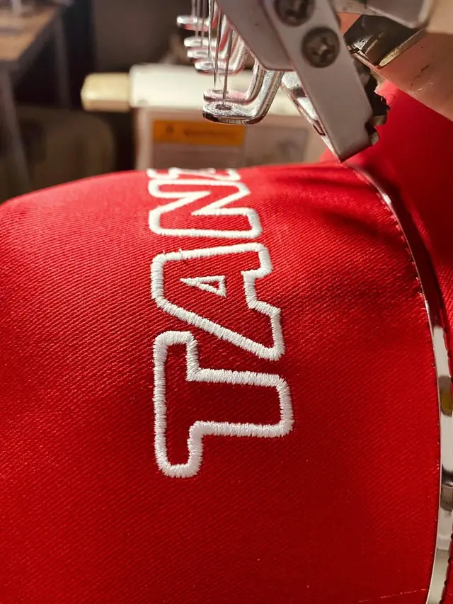
Bordamos el logo de tu empresa en camperas, buzos, gorras y ropa de trabajo, y personalizamos merchandising corporativo para que tu identidad se vea, se use y se recuerde.
Equipos de Syngenta, Bayer, Case IH y Louis Dreyfus ya visten con DLM.
Somos un taller de bordado computarizado en Rosario. Trabajamos con empresas que necesitan vestir a sus equipos, reforzar su identidad y sumar merchandising corporativo con una ejecución prolija y consistente en cada unidad.
Cubrimos tanto la indumentaria del equipo como los regalos y las acciones corporativas, con la misma identidad aplicada en todo.
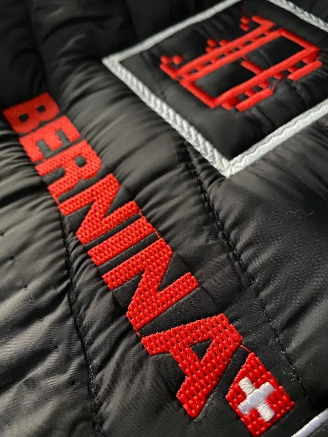
Camperas, buzos, gorras y ropa de trabajo con el logo de tu empresa bordado. Para oficina, campo, planta y equipos comerciales.
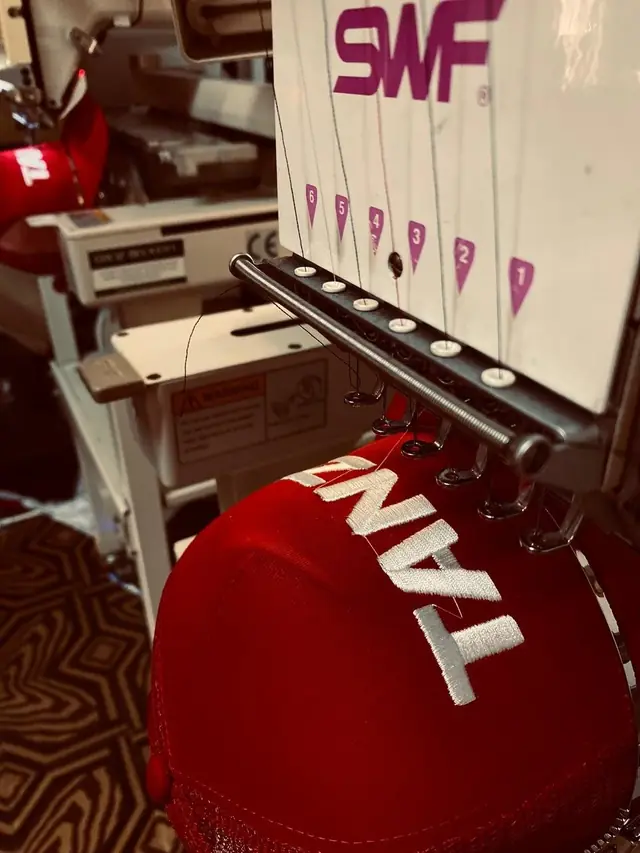
Termos, mates, mochilas y otros productos personalizados para regalos empresariales, eventos, clientes y equipos.
Indumentaria y productos Montagne personalizados con la identidad visual de cada empresa.
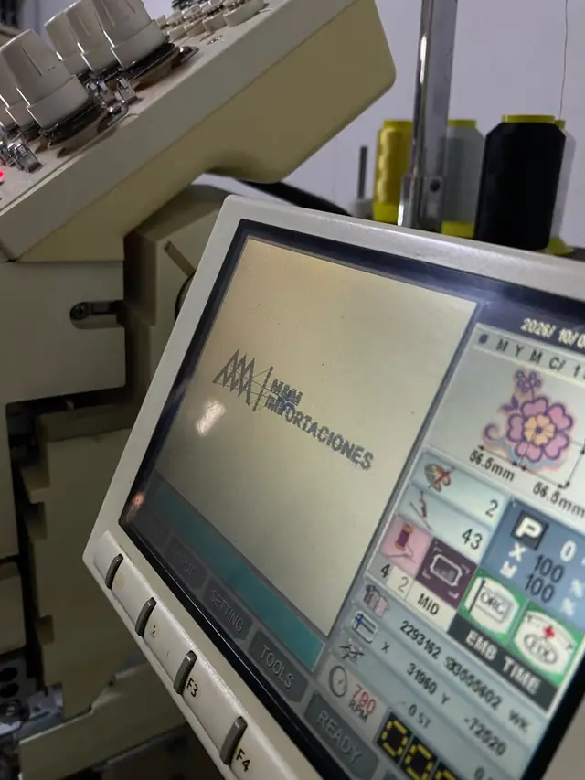
Un recorrido simple para que la personalización no sea un detalle al final, sino parte del resultado desde el comienzo.
Una selección pensada para regalos empresariales, acciones comerciales, eventos y reconocimiento de equipos.
Una opción funcional para clientes, equipos y acciones de marca.
Merch corporativo para regalos y momentos compartidos.
Una alternativa para eventos, ferias y regalos institucionales.
Los productos de merch pueden conservar la marca de fábrica correspondiente a la línea seleccionada; DLM suma la personalización con la identidad del cliente.
Marcas que ya vistieron a sus equipos y reforzaron su identidad con nosotros.
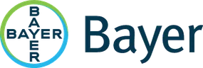
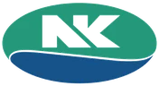
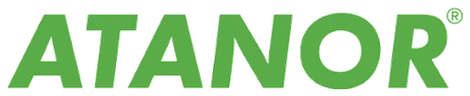
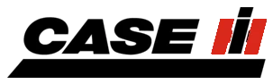
Una muestra real de piezas bordadas en nuestro taller: logos, marcas, parches y diseños personalizados.
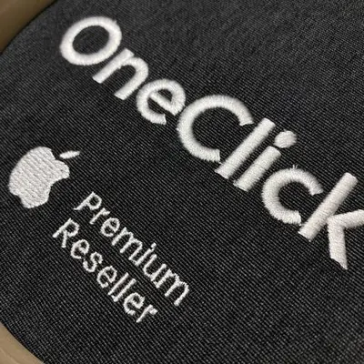
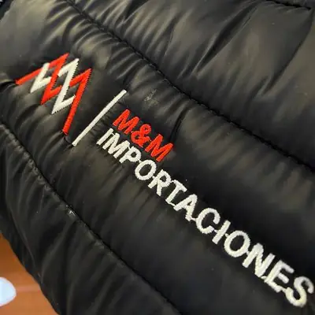
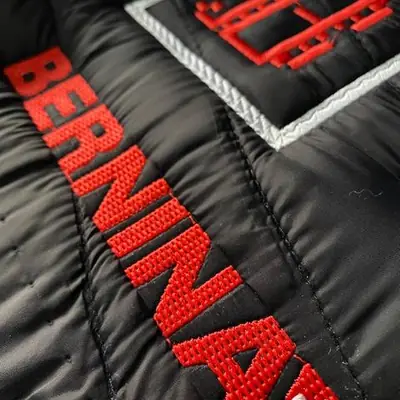
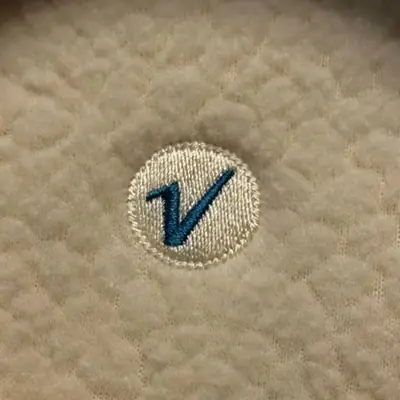
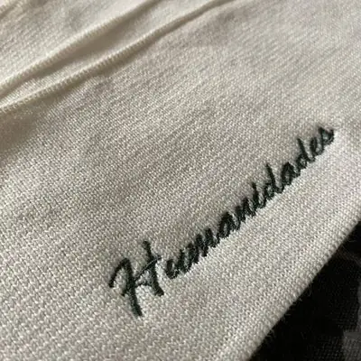
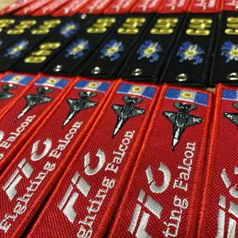
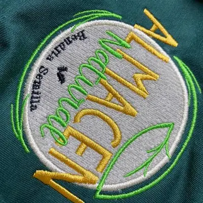
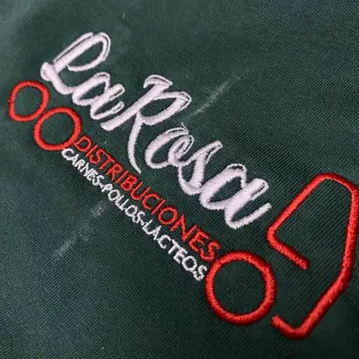
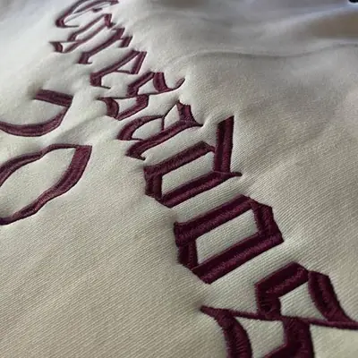
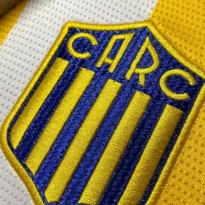
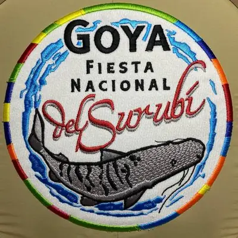
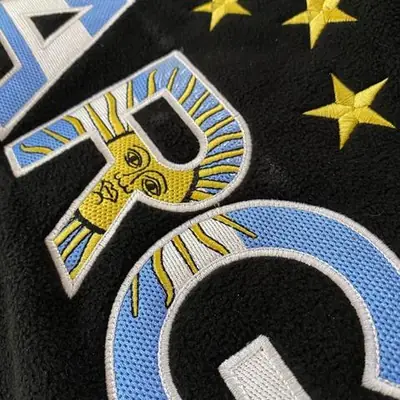
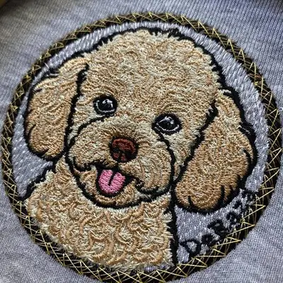
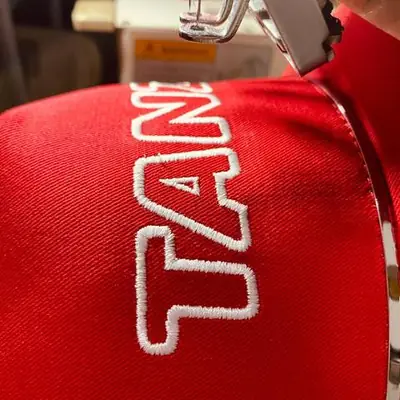
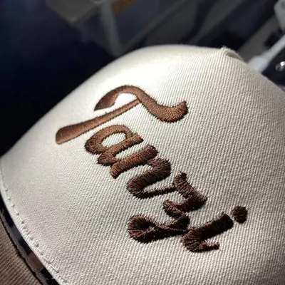
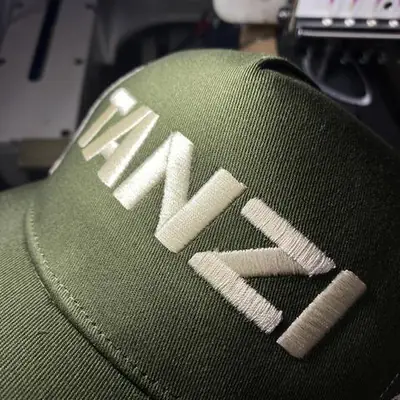
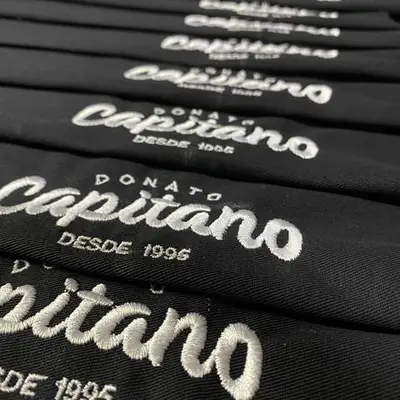
¿Tenés otra duda? Escribinos por WhatsApp y te respondemos.
Sí. Bordados DLM está en Rosario, Santa Fe, y hace bordado computarizado de logos sobre indumentaria empresarial y merchandising corporativo para empresas de la ciudad y de todo el país.
Sí, enviamos pedidos a todo el país.
Camperas, buzos, remeras, gorras y ropa de trabajo, además de parches y escudos bordados. En merchandising corporativo personalizamos termos, mates, mochilas y otros productos para regalos empresariales y eventos.
Sí. Primero te enviamos una propuesta con la aplicación del logo y validamos el diseño con vos antes de producir.
Sí. Ofrecemos indumentaria y productos Montagne personalizados con la identidad visual de cada empresa.
Completá el formulario de abajo con tu nombre, empresa, tipo de producto y cantidad aproximada: se abre WhatsApp con el mensaje listo para enviar. También podés escribir directo al +54 9 341 305-6402.
Contanos qué necesitás y para cuántas personas. Al enviar, se abre WhatsApp con tu consulta lista: solo tenés que tocar enviar.